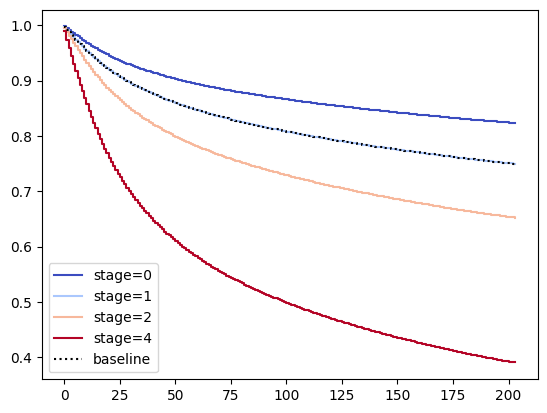

The Question
Research Motivation
Cancer survival outcomes vary widely by stage, sex, and time since diagnosis — but understanding how much each factor matters, and how risk evolves over time, requires more than summary statistics. Standard logistic regression treats death as a binary event and ignores when it happened.
This project applies survival analysis to ask: Which patient characteristics most strongly predict time-to-death after a cancer diagnosis, and how do survival curves differ across cancer stages?
The Data
Scale & Source
Data sourced from the SEER (Surveillance, Epidemiology, and End Results) program maintained by the National Cancer Institute — one of the largest publicly available cancer registries in the United States.
Methods
Analytical Approach
Data Cleaning & Filtering
Filtered the 12M raw records down to 10M patients with complete survival indicators (alive/dead status and survival time in months). Removed records missing stage or sex information.
Cox Proportional Hazards Model
Fit a Cox PH model using the lifelines Python library with cancer stage, sex, and survival time as inputs. The Cox model estimates covariate effects on the hazard of death without specifying the baseline hazard.
Model Evaluation
Assessed model performance using the concordance index (C-statistic) — the probability the model correctly ranks two patients by their survival time. Validated proportional hazards assumption visually via log-log plots.
Kaplan-Meier Survival Curves
Generated Kaplan-Meier curves stratified by cancer stage to visualize how survival probability changes over months post-diagnosis, and to illustrate where the Cox model's stage coefficients translate into real divergence.
Cox model hazard function:
Results
Key Findings
Strong predictive performance
Concordance index of ~0.85 — the model correctly ranked survival order in 85% of patient pairs, well above the 0.5 random baseline.
Stage is the dominant predictor
Later cancer stages showed substantially elevated hazard ratios, consistent with clinical expectations. The coefficient magnitude grew sharply from Stage I to Stage IV.
Steep early decline
Kaplan-Meier curves show the sharpest drop in survival probability within the first 12–24 months post-diagnosis, particularly for late-stage patients.
Gradual long-term plateau
After the early acute phase, survival curves flatten — patients who survive the first two years face lower ongoing hazard rates, visible in the curve's gradual tail.

Kaplan-Meier survival curves by stage — showing the steep early decline and divergence across stage groups.
Takeaway
Survival modeling reveals what cross-sectional analysis misses: not just who dies, but when, and how risk accumulates over time. A concordance index of 0.85 on 10 million records demonstrates that cancer stage and sex reliably stratify mortality risk — and that time-aware modeling is essential for clinical datasets where the outcome evolves.
Skills Demonstrated
What This Project Involved
Survival analysis with the Cox Proportional Hazards model, large-scale data filtering and processing in Python, concordance index evaluation, Kaplan-Meier visualization, and interpreting hazard ratios for a clinical audience.